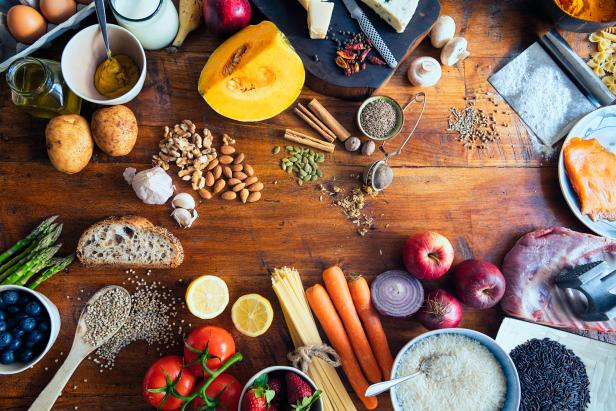

Sopa de mani
Este plato tradicional es muy popular en todo el país y ha sido considerado como
uno de los platos bandera de Bolivia. Cada región del país tiene su propia
versión de esta receta, con variaciones en los ingredientes y la forma de servirla.
En este artículo descubrirás más sobre la sopa de maní y sus diferentes variantes en las distintas zonas de
Bolivia.
Tiempo de preparacion
5 minutos
Tiempo de coccion
30 minutos
Ingredientes
- 1 kilo de carne de res cortada en trozos
- 1 taza de maní
- 5 papas cortadas en cuatro
- 2 cebollas picadas
- 1 tomate pelado y picado
- 1 pimentón verde picado
- 2 dientes de ajo
- 2 zanahorias picadas
- 1 taza de fideos tostados
- 1 taza de arvejas
- 1 taza de aceite
- 1/2 cucharilla de palillo
- Sal y pimienta al gusto

Preparación
Paso 1
- Picar las cebollas, las zanahorias, el morrón y el tomate, y los ajos.
Paso 2
- Hacer el ahogadito en una olla grande añadiendo la cebolla, ajo, verduras picadas y
condimentos.
Paso 3
- Cuando el ahogado esté listo, agregar la carne de res y agua (pero no mucha porque luego se
añade el
maní licuado y puede rebalsar si está muy llena).
Paso 4
- Remojar previamente el maní crudo y luego licuarlo con un poco de agua y sal al gusto.
Paso 5
- Una vez que la sopa haya dado el primer hervor, agregar el maní licuado y dejar hervir
durante al menos
2 horas, o hasta que la carne esté bien cocida. Si falta caldo, puedes ajustarlo según tu
preferencia y
rectificar el sazón.
Aspectos nutricionales (por porcion)